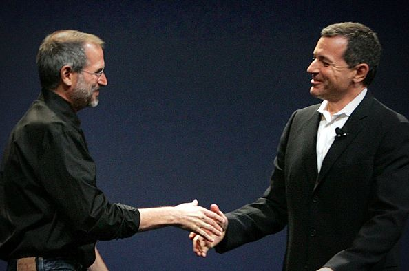

Pixar has a very fascinating history. It is quite complicated as well. Alexander Schure, founder of the New York Institute of Technology (NYIT), dreamed of making the world's first computer–animated film. In 1974, with several computer scientists, including Edwin (Ed) Catmull, he set out to do just that.
Together, these computer scientists formed the Computer Graphics Lab (CGL) at NYIT. One issue was that they lacked the expertise to animate, so they were recruited by George Lucas, the mastermind behind the Star Wars franchise, to work at LucasFilm as part of the Graphics Group there. George wanted from the newly established Group to create a digital film editing system, a digital sound editing system and a laser film printer. For the next few years during their stay at LucasFilm, the group pioneered many of the techniques used in Computer–generated (CG) animation.
One such technique was the Industrial Light and Magic, which was used in Star Trek: The Wrath of Khan (the Genesis Effect) and in Young Sherlock Holmes (the Stained Glass Knight). However, in 1983, after the release of The Last Jedi, the drop off in revenue caused George Lucas to sell off his Graphics Group.
At the time, computers weren't powerful enough to render a fully computer–animated movie. In the meantime, the remaining employees of the Graphics Group formed the independent company we know now as Pixar. At first, they sold hardware such as the Pixar Image Computer. It was incredibly powerful for its time, being able to create 3D images from high resolution imagery. This system was originally sold to the government and to the medical industry. They produced the Renderman, a photo realistic 3D rendering software.
Unfortunately,despite being very inventive and useful, it never sold very well. The hardware division of the company eventually had to be sold off due to its lackluster performance, transferring 18 employees to another company.
History of Pixar
In the picture above, there is the Pixar Image Computer. Only less than 300 were sold, contributing to the eventual end of the hardware division of Pixar.
When Pixar first became independent, it was headed by Edwin Catmull as President and Alvy Ray Smith as Executive Vice President. Steve Jobs, after becoming fired by his own company Apple, showed interest in investing in Pixar. At first, George Lucas declined. After Lucas found out there were no other investors, he let Jobs invest 5 million dollars towards the company as capital. Later, Pixar found Jobs joining the board of directors as chairman.
During that period, Walt Disney Studios bought the Pixar Image Computer and custom software written by Pixar for their Computer Animation Production System (CAPS) project, to make the animating process easier. This would not be the end of Disney's involvement in Pixar's history.
After several waves of layoffs, Pixar managed to make the iconic deal with Disney for 26 million dollars to create three computer–animated feature films. Those movies were Toy Story, A Bug's Life and Toy Story 2.
John Lasseter, who now acts as chief creative officer at pixar, originally worked as one of the only people at Pixar during its early days who had experience with animating. He was previously fired by Disney after working a short time there and wanted to try his hand at animating digitally. He helped to spearhead the animation section of the company, helping Pixar to earn its status that it has today.
Ed Catmull is and was a computer scientist, as aforementioned and is now president of Pixar. He managed the computer graphics and video editing at LucasFilm and was Chief Technical Officer in Pixar's early days. He was integral to the rendering of the movies, especially Toy Story.
In the picture above, there are the three men who were integral to Pixar's inception–and present existence, from left to right : Ed Catmull, Steve Jobs and John Lasseter.
During the early 2000s, Disney's animation department was failing after a successful train of movies, both critically and financially, a time known as the Disney Renaissance of the 1990s. Its first venture into a feature–length film completely in CGI, Chicken Little was a critical failure in 2005. Home on the Range, a 2–D hand–drawn animated film was also a critical failure in 2004, and remains one of Disney's forgotten films, along with The Black Cauldron. After the critical success, but also financial flop of Treasure Planet in 2003, Disney was undergoing major reforms, leaving the animation department in shambles.
In 2006, Disney bought Pixar for approximately $7.4 billion in an all-stock deal. This decision was agreed upon by both companies. Micheal Eisner had left as CEO of Disney and Robert Iger was the newly appointed CEO after being promoted from being COO. However, both were to remain as separate entities to maintain their own quality and “culture”. Previously, the two companies were at odd ends, Disney wanted to make Toy Story 2 as a direct–to–video movie and to make the movie on its own, despite Toy Story being the intellectual property of Pixar. After Jobs and Micheal Eisner, the CEO of Disney at the time had a falling over who had control over Toy Story 2, Disney decided to create its own computer animation studio, Circle 7 Animation and Pixar set out to find other distributors. Pixar did not find any other distributors and Disney's Circle 7 Animation shut down years later.
This acquisition of Pixar proved beneficial to both parties, as Disney has jumped back in the box office with a new Disney Renaissance and Pixar is one of the most celebrated animation studios and is a model for both good storytelling and visuals. Both companies have been earning millions and both companies are producing more quality movies than ever before. Thanks to these two companies, today, computer-animation is easir to make and more common than it was in the 1970s and 1980s.
Steve Jobs and Robert (Bob) Iger shake hands after the acquisition of Pixar.
Home References Glossary